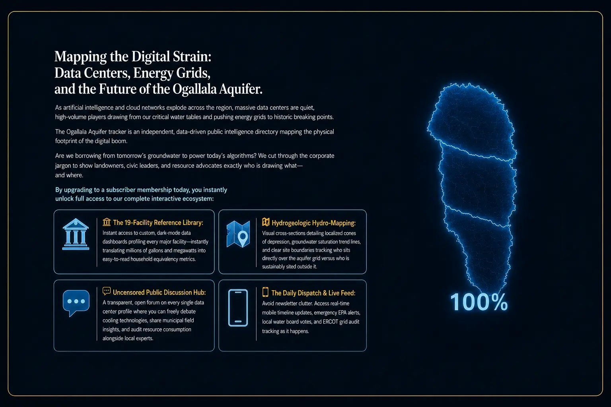

The Ogallala story, told visually.
Five connected views move from the groundwater beneath us, to the aquifer overview, to emerging infrastructure pressure, a real-world example, and the trusted sources behind the Tracker.



As a subscriber, you receive daily updates on data-center stories.
Five current examples of the sourced, nonpartisan intelligence subscribers can follow without newsletter clutter.
Data centers “dug their own grave,” says Texas Gov. Greg Abbott
Texas leadership responds to mounting concerns about rapid expansion, community support, water, utility costs, and rural siting.
Activists challenge coal power for energy-hungry AI data centers
A debate over public health, environmental review, and how the expanding digital economy should be powered.
Data-center uproar scrambles the midterm election
Local opposition becomes a national campaign issue crossing traditional party lines.
Colorado communities split on the data-center boom
Moratoriums, incentives, and restrictions create a rapidly changing local-policy landscape.
Pennsylvania imposes new rules for AI data-center development
New requirements emphasize environmental standards, transparency, local approval, and protection from added utility costs.
Example feed · Dates and status preserved · Open any card to review the original reporting